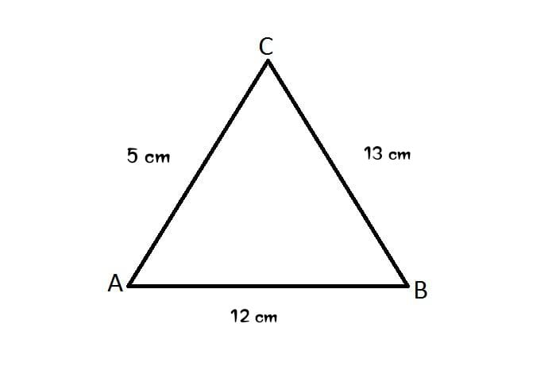

1. Nilai x dari 3x-5= 16 adalah....
5 6 7 8 92. Perhatikan tabel berikut:
| Nilai | Frekuensi |
|---|---|
| 60 | 2 |
| 70 | 3 |
| 80 | 4 |
| 90 | 1 |
Rata-rata dari data tersebut adalah...
73 74 75 76 773. Perhatikan gambar dibawah ini!

Luas persegi panjang tersebut adalah...
48 cm² 49 cm² 58 cm² 59 cm² 68 cm²4. Akar-akar dari persamaan x²-5x+6 = 0 adalah...
1 dan 6 2 dan 3 -2 dan -3 -1 dan -6 3 dan 65. Dalam sebuah kotak terdapat 4 bola merah dan 6 bola biru. Jika diambil satu bola secara acak, peluang terambil bola merah adalah...
1/10 2/5 3/5 4/6 2/36. Tentukan nilai x dan y dari sistem persamaan 2x+y=7 dan x-y=1
7. Perhatikan tabel harga berikut:
| Jumlah Buku | Harga (Rp) |
|---|---|
| 2 | 10.000 |
| 5 | 25.000 |
| 8 | 40.000 |
a. Apakah harga terebut merupakan perbandingan senilai? Jelaskan!
b. Berapa harga 12 buku?
8. Perhatikan gambar berikut:

a. Jelaskan segitiga apakah itu?
b. Hitunglah keliling segitiga tersebut!
9. Diketahui baris aritmetika dengan suku pertama 4 dan beda 3.
a. Tentukan suku ke-10!
b. Tentukan jumlah 10 suku pertama!
10. perhatikan tabel berikut:
| Kendaraan | Kecepatan (km/jam) | Waktu Tempuh (jam) |
|---|---|---|
| A | 60 | 2 |
| B | 80 | 1,5 |
| C | 50 | 3 |
a. Hitunglah jarak yang ditempuh masing-masing kendaraan!
b. Kendaraan manakah yang menempuh jarak paling jauh?!